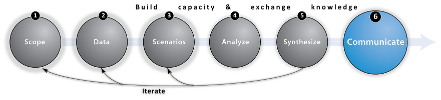

Step 6: Communicate (Inform Decisions)

Overview
Once results have been synthesized, it is important to offer targeted communication of this new ecosystem service knowledge to inform decisions. Ecosystem service information can be delivered in many ways, from peer-review papers to reports to diagrams and interactive maps. For this information to be taken up, it should be represented in ways that resonate with the intended audience. We have found that the most effective communication occurs through co-production of knowledge and knowledge products by scientists, policy-makers and stakeholders through an applied process.


Goals
- Produce reports and other synthesis projects (e.g, executive summary, presentations, online maps, etc.) tailored to intended audience and decision-context
- Create an online repository (e.g., mapping portal, data download) to archive and dissementate key project information
- Organize a workshop or meeting to share final results and conclude the project

Tips
- Clearly convey relevant information using appropriate communication mediums (technical report vs. video campaign)
- Boiling everything down to a number does not always make a policy better or the discussion more scientific
- Be honest about the science and underlying uncertainty, particularly when not everything can be reduced to a single currency or when money is the only unit of value

Gallery
Visit our Visualization Gallery to explore examples of different design techniques NatCap has used to translate science information into clear and effective visuals. Many of these visuals have been used to informing the MSP process in places around the world.

Frequently Asked Questions (FAQ)
Q: Do decision-makers always want ecosystem service valuation?
A: No. It's not always about the money. Other metrics including livelihoods (e.g., jobs) and ecological outcomes (biophysical units) can be just as valuable to decision-makers.
Q: What kind of information do decision-makers want to hear?
A: Explain what they are losing, how it will affect them, and what they are gaining from some management action/ intervention. This means explaining how environmental or ecological change will affect them on both sides of the equation.
Q: What is the best way to present results?
A: Results are often best displayed in multiple formats to accomodate different audiences and communication mediums. Because of the spatial nature of MSP, maps can serve as an important component of communicating results. Diagrams can be useful for visualizing trade-offs among services under different scenarios. Presentations offer an opportunity to foster conversation, while written reports are often used to catalog the relevant literature, data sources, model methodology, and results.
Q: What comes next?
A: After communicating with partners and stakeholders, you may iterate the planning process. This can include expanding the project’s objectives, improving data inputs, or modifying scenarios. If your project is concluding, applying results through implementation or developing a monitoring program can serve as a lasting contribution to the study area and local community members.

Links

Use-Cases
Use the expand [+] button to learn more about this communicate step in the context of select NatCap use-cases.top
Belize
Communicating and applying project results in Belize was multi-faceted, including a formal planning document, executive summary, peer-reviewed publications and online maps, videos and brochures. All synthesis products and communication materials were tailored to specific audiences and decision-makers.
California